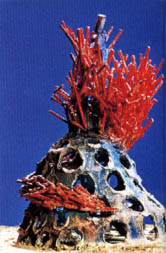

|
More
on Paperclay
by
Graham Hay
 aperclay is an increasingly popular medium with artists, craftspeople,
hobbyists and teachers. It offers all the properties of a favourite
clay body as well as the opportunity to use techniques borrowed
from woodwork, bricklaying, candle making and metalwork. While paperclay
has been around for decades as a way to create non-warp clay slabs,
it has recently become popular as a ceramic art material because
of its dry building properties and pre-firing strength. Introduced
to paperclay by Jaromir (Mike) Kusnik, a ceramic technologist who
had been experimenting with it since the early 1980s, I have been
exhibiting and teaching paperclay techniques since 1992.
aperclay is an increasingly popular medium with artists, craftspeople,
hobbyists and teachers. It offers all the properties of a favourite
clay body as well as the opportunity to use techniques borrowed
from woodwork, bricklaying, candle making and metalwork. While paperclay
has been around for decades as a way to create non-warp clay slabs,
it has recently become popular as a ceramic art material because
of its dry building properties and pre-firing strength. Introduced
to paperclay by Jaromir (Mike) Kusnik, a ceramic technologist who
had been experimenting with it since the early 1980s, I have been
exhibiting and teaching paperclay techniques since 1992.
As
indicated previously by Caplan, Ellery, Gartside and Gault (see
references), any clay can be made into a paperclay by mixing a smooth
puree of water and paper fibre into the clay body while in slip
form. While some artists prefer to use cotton-based paper, the local
non-gloss newspaper is both satisfactory and inexpensive. I roll
it up and push it through the branch port of an electric garden
mulcher before covering the paper flakes with about ten times their
loose volume in hot water. A free-standing slip mixer is used to
puree it until all individual pieces of paper disappear. A flyscreen
or plastic shade cloth is used as a sieve to remove most, but not
all, of the water. As a guide, I remove just enough water so that
the puree does not slide through my fingers. I mix a third of a
bucket of puree with two thirds of a bucket of clay slip, by volume.
I have not needed to use this technique for some time, however,
because a local clay manufacturer has been producing and selling
earthenware and stoneware paperclay at conventional clay prices
for the past year.
Slipcasting properties are retained and, provided the paper fibre
is sufficiently fragmented into individual fibres, the clay can
be used on the potter's wheel. However, extruding fine rods is not
possible because the paper fibre disrupts the process. The resulting
fibrous clay can be joined conventionally – plastic-to-plastic,
as well as radically – plastic-to-dry, or dry-to-dry. While the
latter techniques are relatively simple processes, they do involve
some unlearning of entrenched habits. The easiest way to grasp the
real advantages of paperclay is to make long rods or strips, allow
them to completely dry before joining using paperclay slops or slip
as the joining 'glue'.
Next
Page > Paperclay Properties >
Page 2
More Articles
|